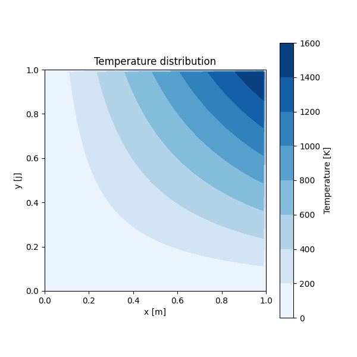

This is a sample program to verify the installation. It creates 2D dummy data and visualizes it as a contour plot using the matplotlib library.
Running this script will produce the following image:

Below is the full code with explanations for key parts.
## Sample program for checking installation
import copy as cp
import numpy as np
import matplotlib.pyplot as plt
## definition
L = 1.0 #cavity length [m]
N = 40 #number of girds [-]
dl = L/N #grid spacing [m]
## grid
# Create arrays for grid coordinates and spacing
x = np.zeros(N+2)
dx = np.zeros(N+2)
x[0] = 0.0
dx[0] = 0.0
dx[N+1] = 0.0
dx[1:N+1] = dl ##Note that 1 to N, but not N+1 in python
# Calculate the coordinate of each grid point (cell center)
for i in range(1,N+2):
x[i]=x[i-1]+0.5*(dx[i]+dx[i-1])
dy = cp.copy(dx) # Create a copy for the y-axis
y = cp.copy(x)
## dummy data
# Create a 2D array for temperature and fill it with dummy values
t = np.zeros((N+2,N+2))
for j in range(1,N+1):
for i in range(1,N+1):
t[j,i] = j*i
## visualization & save image
# Create a figure
fig=plt.figure(figsize=(6.0,6.0))
# Generate a filled contour plot
img=plt.contourf(x,y,t, cmap="Blues")
# Set aspect ratio to equal
plt.gca().set_aspect('equal')
# Add a color bar
cbar=plt.colorbar(img)
cbar.set_label('Temperature [K]')
# Set titles and labels
plt.title('Temperature distribution')
plt.xlabel('x [m]')
plt.ylabel('y [j]')
# Display the plot
plt.show()
# Save the figure to a file
k=1
fn='t_' + '{:03}'.format(k) + '.png'
fig.savefig(fn)
これは、インストールの確認用のサンプルプログラムです。2次元のダミーデータを作成し、matplotlibライブラリを使ってコンター図として可視化します。
このスクリプトを実行すると、以下の画像が生成されます。
以下に、主要な部分に解説を加えたプログラム全体を示します。
## Sample program for checking installation
import copy as cp
import numpy as np
import matplotlib.pyplot as plt
## definition
# 定数の定義
L = 1.0 #cavity length [m] (計算領域の長さ)
N = 40 #number of girds [-] (格子点数)
dl = L/N #grid spacing [m] (格子間隔)
## grid
# グリッド座標と間隔のための配列を作成
x = np.zeros(N+2)
dx = np.zeros(N+2)
x[0] = 0.0
dx[0] = 0.0
dx[N+1] = 0.0
dx[1:N+1] = dl ##Note that 1 to N, but not N+1 in python
# 各グリッドポイント（セル中心）の座標を計算
for i in range(1,N+2):
x[i]=x[i-1]+0.5*(dx[i]+dx[i-1])
dy = cp.copy(dx) # y軸用にコピーを作成
y = cp.copy(x)
## dummy data
# 温度用の2次元配列を作成し、ダミーデータで埋める
t = np.zeros((N+2,N+2))
for j in range(1,N+1):
for i in range(1,N+1):
t[j,i] = j*i
## visualization & save image
# 描画オブジェクトを作成
fig=plt.figure(figsize=(6.0,6.0))
# 塗りつぶしコンター図を生成
img=plt.contourf(x,y,t, cmap="Blues")
# アスペクト比を1:1に設定
plt.gca().set_aspect('equal')
# カラーバーを追加
cbar=plt.colorbar(img)
cbar.set_label('Temperature [K]')
# タイトルと軸ラベルを設定
plt.title('Temperature distribution')
plt.xlabel('x [m]')
plt.ylabel('y [j]')
# プロットを表示
plt.show()
# 図をファイルに保存
k=1
fn='t_' + '{:03}'.format(k) + '.png'
fig.savefig(fn)